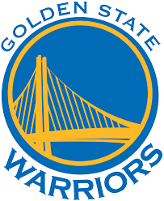
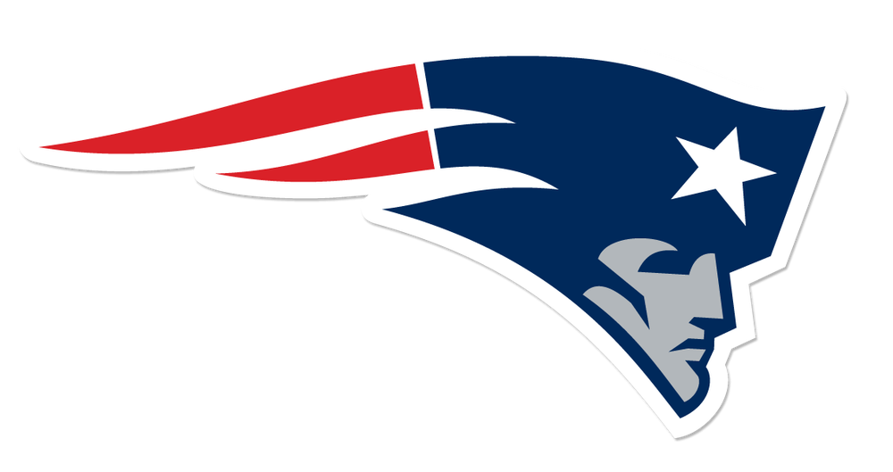
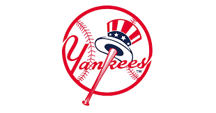

| Contact |
Name |
Email Address |
Phone |
| Info |
Josh Lavoie |
Josh.lavoie@maine.edu |
207-320-1234 |
Fav Teams

Golden State Warriors have been my favorite NBA team since they got Kevin Durant. Some people tell me I'm a fair-weather fan but I disagree.

Patriots are my favorite football team. I have watched the Patriots from a young age. It has beed quite easy to be a pats fan. We are witnessing the greatest QB of all time and maybe the best coaching also.

Being a Yankees fan from where I'm from isn't easy. But it's a commitment I choose to make when I was young. I will be a Yankees fan for life and nothing will ever change that. I have gotten to watch the best shortstop to ever play baseball Derek Jeter
NBA
NFL
MLB
Spanish La Liga
Home Page